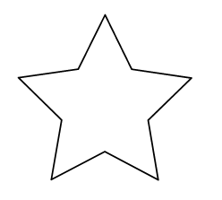
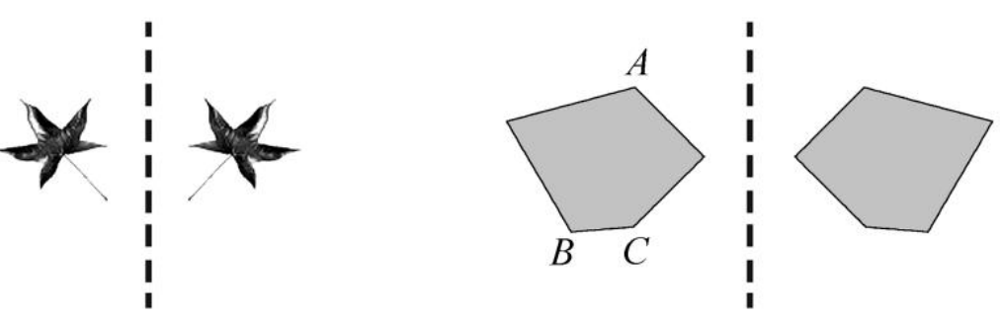
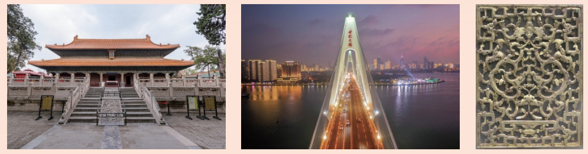
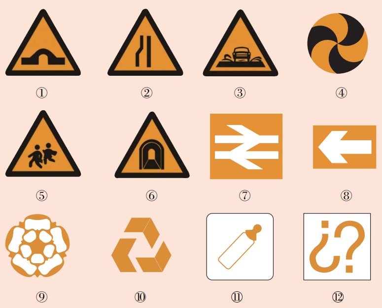
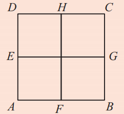
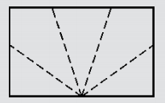
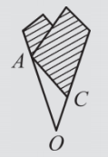
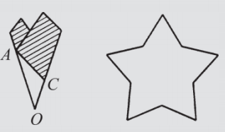
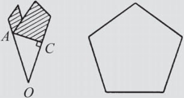

山倒映在湖中，这是令人难忘的对称景象。自远古以来，对称的形式都被认为是和谐美丽的。
用一张半透明的纸描出图9.1.2所示的星形图，然后用不同的方式对折，用直尺画出折痕。这幅星形图有多少条对称轴？

这幅星形图有5条对称轴

每一组里，某一边的图形沿虚线对折之后与另一边的图形完全重合。
做一做
请你标出图9.1.3中 \(A\)、\(B\)、\(C\) 三点的对称点 \(A_1\)、\(B_1\)、\(C_1\)。
点\(A\)的对称点是\(A_1\)，点\(B\)的对称点是\(B_1\)，点\(C\)的对称点是\(C_1\)。
1. 你一定见过许多美丽的照片或图片，如图所示的三幅图都给我们一种美妙和谐的轴对称形象。请你尽可能多地找出类似的照片或图片，与你的同伴一起欣赏。

2. 观察下列各种图形，分别判断是不是轴对称图形。

①⑥⑧⑨⑪是轴对称图形，其他不是轴对称图形。
3. (第5页第3题) 如图, 已知正方形 \(ABCD\) , 点 \(E\) 、 \(F\) 、 \(G\) 、 \(H\) 分别是 \(DA\) 、 \(AB\) 、 \(BC\) 、 \(CD\) 的中点, 四边形 \(ABGE\) 沿 \(EG\) 对折能与四边形 \(DCGE\) 重合, 点 \(A\) 的对称点是点 ______; 四边形 \(AFHD\) 沿 \(HF\) 对折能与四边形 \(BFHC\) 重合, 点 \(B\) 的对称点是点 ______.

点A的对称点是点 D；点B的对称点是点 C。
节日前夕, 有时需要制作许多五角星. 我们用折纸的方法, 可以直接剪出一个五角星.
方法： 拿一张长方形(或圆形)的纸, 对折成图1, 再沿图1中的虚线将平角折成五等份, 得到图2; 在五等份的折线上, 取点 \(A\) 和点 \(C\) , 使 \(OC\) 比三分之一的 \(OA\) 微微长一点; 沿斜线 \(AC\) 把图2中的阴影部分剪掉, 然后把纸展开, 就得到图3所示的一个正五角星。


如图4，若取得的 \(OC\) 比 \(OA\) 的三分之一长得多（如 \(OC\) 为 \(OA\) 的一半），这时剪出的五角星就不一样了，它的五个角的边比较短；如图5，而当沿直角方向剪时，展开后则成了一个正五边形。


想一想： 这种折纸剪正五角星的方法，其中隐含着什么数学道理？
利用对称性和角度等分：折叠产生对称轴，五等分平角得到 \(36°\) 角，剪裁时保证五个角均匀，体现了轴对称和角平分线的性质。
抽象能力： 从现实物体中抽象出轴对称图形。
几何直观： 通过折叠、观察理解对称轴与对应点。
应用意识： 用轴对称解释生活中的美与设计。